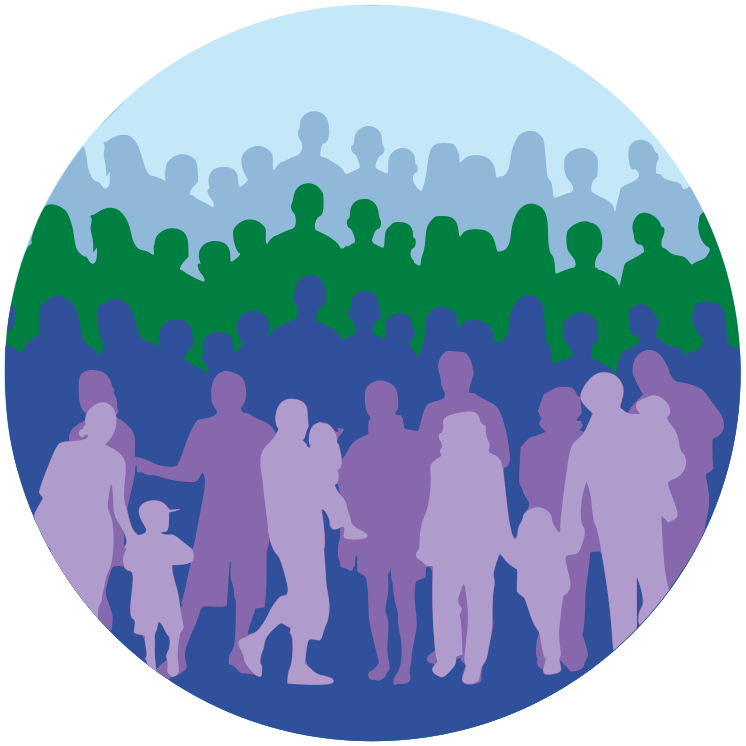

Westchester Children's Association · Data dashboard
Children By the Numbers 2026
[PLACEHOLDER] The interactive companion to WCA's 2026 Data Bulletin: the report's four chapters,
with charts you can hover over for the numbers, and a map to look up your own community.
Chapter 1
Population, Demographics & Family Economic Insecurity

This chapter explores demographic and economic trends, highlighting the growing financial pressures
facing families, including rising housing, child care, food, and healthcare costs.
Westchester's child and youth population is large but shrinking and becoming more diverse.
This part looks at the changing population demographics of the County's children.
Chapter 1 · Population & Demographics
Bulletin page 1.3
Westchester County population, 2024
Chart 1.3Hero sentence, crowd illustration and donut (pattern P15), built in the next step
Source: added with the chart.
Chapter 1 · Population & Demographics
Bulletin page 1.4
Race and ethnicity of Westchester children and youth ages 0 to 24, 2014 vs 2024
Chart 1.4Paired bars by race group, 2014 lighter and 2024 full (pattern P2)
Source: added with the chart.
Chapter 1 · Population & Demographics
Bulletin page 1.5
Births and young children in Westchester County
Charts 1.5Babies born: a pictogram row and a stat circle (P16 + P11); children under 5: a line with end labels (P7)
Source: added with the chart.
Part 2
Family Economic Insecurity
Part 2 tells the story of the affordability crisis our families are experiencing, highlighting
income gaps by family type, poverty concentrated in single-mother households, the rising cost of rent, child care,
and living expenses, and the stress from debt, food insecurity, and housing costs.
Chapter 1 · Family Economic Insecurity
Bulletin page 1.7
Median income by family type, 2014 vs 2019 vs 2024
Chart 1.7Silhouette-labeled bars with year steps and the ALICE budget callouts (P1 + P2 + P3)
Source: added with the chart.
Chapter 1 · Family Economic Insecurity
Bulletin page 1.8
Family composition of all children and of children below poverty, by race, 2024
Charts 1.8Two panels of 100% stacked bars in family colors, "All races" in gray
Source: added with the chart.
Chapter 1 · Family Economic Insecurity
Bulletin page 1.9
Westchester poverty rates by race and ethnicity, 2022 vs 2024
Charts 1.9Six small panels (one per group), 2022 lighter and 2024 full (P2)
Source: added with the chart.
Chapter 1 · Family Economic Insecurity
Bulletin page 1.10
After rent and child care, what's left of monthly income? 2014 vs 2024
Chart 1.10Three donuts per year, with a 2014 / 2024 switch (P5)
Source: added with the chart.
Chapter 1 · Family Economic Insecurity
Bulletin page 1.11
Families struggle with increased costs of living
Table 1.11Icon table: 2014, 2024, the change, the most current figure in a highlighted column (P6)
Source: added with the chart.
Chapter 1 · Family Economic Insecurity
Bulletin page 1.12
Inflation: the Consumer Price Index in New York-Newark-Jersey City
Chart 1.12One blue line with notes at the peaks and a callout for the latest value (P7)
Source: added with the chart.
Chapter 1 · Family Economic Insecurity
Bulletin page 1.13
Other signs of distress: food insecurity, SNAP and health insurance premiums
Charts 1.13Three charts: food insecurity and poverty by community (bars), SNAP recipients by year (area), ACA premiums New York vs US (lines)
Source: added with the chart.
Chapter 1 · Family Economic Insecurity
Bulletin page 1.14
Homeless children in Westchester, two counts: NYSED and HUD, 2014 to 2025
Chart 1.14Two lines with end labels and a callout explaining the two definitions (P7 + P3)
Source: added with the chart.
Chapter 1 · Family Economic Insecurity
Bulletin page 1.16
Average annual credit card debt held by New York State individuals, 2010 to 2024
Chart 1.16Blue bars by year with a rust callout for the increase (P3)
A child's earliest years set the foundation for everything that follows, from academic readiness to long-term
health and economic mobility. This chapter examines how early childhood systems across Westchester County shape
outcomes, and where disparities in opportunity take root.
For families with young children, child care is an essential infrastructure and one of the largest
costs they face. Quality care is also more than coverage while parents work: it is where early learning begins.
This section starts with child care costs and who carries the heaviest burden, then looks at the programs meant to
lighten the load, before following children into early education.
Chapter 2 · Child Care
Bulletin page 2.3
Average monthly cost of center-based infant care in Westchester, 2010 to 2026
Chart 2.3Line with value labels and a rust callout for the increase (P7 + P3)
Source: added with the chart.
Chapter 2 · Child Care
Bulletin page 2.4
Percentage of income spent on infant care by family type, 2024
Chart 2.4Silhouette-labeled 100% bars with the 7% benchmark callout (P1 + P4 + P3)
Source: added with the chart.
Chapter 2 · Child Care
Bulletin page 2.5
Tax credits for families with children
Table 2.5Federal and New York State credits, with the US and NY outline maps as row labels (P10b)
Source: added with the chart.
Chapter 2 · Child Care
Bulletin page 2.6
Comparing child care supportive programs, 2025
Table 2.6CCAP and the Westchester Works Scholarship: what each is, who qualifies, what it's worth, where it stands
Source: added with the chart.
Chapter 2 · Child Care
Bulletin page 2.7
Two families, two child care programs: what each pays, 2026
Cards 2.7Two family comparison cards with walking-family silhouettes (P13)
Source: added with the chart.
Chapter 2 · Child Care
Bulletin page 2.8
Income eligibility limits for child care programs in Westchester, 2026
Chart 2.8Income bands by household size: the CCAP limit and the Westchester Works range
Source: added with the chart.
Part 2
Early Education
Quality early care and quality early education go hand in hand. This section starts at Grade 3, where
opportunity gaps are first measured, then looks back at the programs children pass through on the way there — Head Start,
Early Intervention and Universal Pre-K — to consider where these earlier investments will bring the most benefit.
Chapter 2 · Early Education
Bulletin page 2.11
Comparing third grade proficiency in two school districts, 2025
Chart 2.11Yonkers vs Scarsdale bars with student figures and the district income notes
Source: added with the chart.
Chapter 2 · Early Education
Bulletin page 2.12
Early childhood programs before kindergarten
Table 2.12Head Start, Early Intervention and Universal Pre-K: ages, what each is, who it's for, who runs it (P6)
Source: added with the chart.
Chapter 2 · Early Education
Bulletin page 2.13
Head Start enrollment in New York State, 2014 to 2025
Chart 2.13Two lines (Head Start, Early Head Start) with end labels and the 2020 gap marked (P7)
Source: added with the chart.
Chapter 2 · Early Education
Bulletin page 2.14
Early Intervention exits at age-typical levels in Westchester County, 2015 to 2024
Chart 2.14Three outcome lines with first and last values (P7)
Source: added with the chart.
Chapter 2 · Early Education
Bulletin page 2.15
Early Intervention therapists in New York State, 2018 to 2025
Chart 2.15Blue bars by year with value labels
Source: added with the chart.
Chapter 2 · Early Education
Bulletin page 2.16
Decline in age-typical levels for special education preschoolers in New York State, 2015 to 2023
Chart 2.16Three outcome lines with first and last values (P7)
Source: added with the chart.
Chapter 2 · Early Education
Bulletin page 2.17
Universal Pre-K in Westchester County, 2020 through 2025
Charts 2.17Hero sentence, enrolled / not enrolled split bar (P4), the "25 of 40 districts" stat circle (P11) and the enrollment trend
This chapter examines how poverty and housing, child health and welfare, education, and youth justice shape
children's well-being and access to opportunity across Westchester County.
Westchester is one of New York's wealthiest counties. Even so, about one in nine school-age children
lives below the federal poverty line, and nearly two thirds of them live in just four communities.
Chapter 3 · Poverty & Housing
Bulletin page 3.3
Four communities are home to nearly two-thirds of the school-aged children in poverty, 2024
Map and table 3.3Westchester outline with the four communities highlighted and a stat circle (P10 + P11), beside the table
Source: added with the chart.
Chapter 3 · Poverty & Housing
Bulletin page 3.4
Homeless students per 1,000 enrolled in Westchester schools, 2016 to 2025
Chart 3.4Line with the pandemic period shaded and the moratorium callout (P7 + P3)
Source: added with the chart.
Chapter 3 · Poverty & Housing
Bulletin page 3.5
Homeless Westchester students by type of living situation, 2020 to 2024
Table 3.5Living situations with counts and change, the rising rows highlighted (P6)
Source: added with the chart.
Chapter 3 · Poverty & Housing
Bulletin page 3.6
Homeless students per 1,000 enrolled by race and ethnicity, 2020 vs 2024
Chart 3.6Paired bars by race group with the change above each pair (P2)
Source: added with the chart.
Chapter 3 · Poverty & Housing
Bulletin page 3.7
Graduation for students experiencing homelessness, and where those students live, 2024
Charts 3.7Two bars (all students vs experiencing homelessness) and the four-communities map with values (P10)
Source: added with the chart.
Part 2
Child Health & Welfare
Data trends do not show what children experienced. Often, when a legal standard changes, the data will
change — but that does not account for how children are impacted. For example, Child Protective Services findings fell
after the evidentiary standard changed in 2022, while there was a rise in domestic violence records after 2022 — but
neither data set provides a measure of how many children were harmed and in what way. Thus, in this part you'll find
that we present each trend twice, first to show the change and then to show the impact.
Chapter 3 · Child Health & Welfare
Bulletin page 3.9
Percentage of child abuse reports substantiated, Westchester, 2005 to 2025
Chart 3.9Line with the 2022 standard change marked and a stat circle for the rise (P7 + P11)
Source: added with the chart.
Chapter 3 · Child Health & Welfare
Bulletin page 3.10
Domestic violence reports by relationship, Westchester County, 2012 to 2024
Chart 3.10Two lines (intimate partner, other family) with end labels and a stat circle (P7 + P11)
Source: added with the chart.
Chapter 3 · Child Health & Welfare
Bulletin page 3.11
Share of foster care days by placement setting, Westchester County, 2018, 2021 and 2025
Chart 3.11100% stacked bars for three years with two rust callouts (P3)
Source: added with the chart.
Chapter 3 · Child Health & Welfare
Bulletin page 3.12
Emergency department visits for self-harm by age, Westchester County, 2022
Chart 3.12Horizontal bars by age group, ages 10-19 in rust, with the 988 support line (P9)
Source: added with the chart.
Chapter 3 · Child Health & Welfare
Bulletin page 3.13
Students classified as overweight or obese, by school district, Westchester County, 2024-2025
Chart 3.13Scatter of districts against economic disadvantage, with a trend line
Source: added with the chart.
Part 3
Education & Opportunity
This section follows one question through a child's school years: does the gap that opens in the early
grades close, narrow, or simply change shape? The answer turns out to depend entirely on which measure you look at, and
the diploma is the most forgiving of them.
Chapter 3 · Education & Opportunity
Bulletin page 3.15
English and AP scores against economic status in Westchester school districts
Chart 3.15Five districts, two bars each (English proficiency, AP scores), ordered by economic disadvantage
Source: added with the chart.
Chapter 3 · Education & Opportunity
Bulletin page 3.16
Grades 3-8 math, Regents and AP exams, Westchester school districts, 2025
Chart 3.16Two lines with the gap shaded and a rust "difference" box at each point (P8)
Source: added with the chart.
Chapter 3 · Education & Opportunity
Bulletin page 3.17
Chronic absenteeism by student group and by race and ethnicity, Westchester County, 2024-2025
Charts 3.17Two sets of horizontal bars with the "All students" reference line (P9)
Source: added with the chart.
Chapter 3 · Education & Opportunity
Bulletin page 3.18
Student suspensions by race and ethnicity, and the districts with the highest rates
Charts 3.18Race bars with the countywide reference line; district bars (P9)
Westchester Children's Association not only focuses on our youngest children but also on the emerging adults in our
community ages 18 to 24. This age group faces unique challenges as they have aged out of many of the resources for
which they were eligible when they were younger.
Westchester's unemployment rate is
for residents 25 and older. For young adults ages 20 to 24, it is ,
and most of the recent rise came from young men. This section asks who is working, what they earn, and whether a
full-time paycheck covers the cost of living here.
Chapter 4 · Employment & Earnings
Bulletin page 4.3
Westchester County youth unemployment rate, ages 20 to 24, 2024
Chart 4.3Three nested tiles: Westchester 20-24, New York State 20-24, Westchester 25 and over (P12)
Source: added with the chart.
Chapter 4 · Employment & Earnings
Bulletin page 4.4
Youth unemployment by gender, ages 20 to 24, 2015-2019 vs 2020-2024
Chart 4.4Paired bars (men, women, all), earlier period lighter, "All" in gray (P2)
Source: added with the chart.
Chapter 4 · Employment & Earnings
Bulletin page 4.5
Can a minimum wage worker afford rent in Westchester County?
Charts 4.5Three solid tiles (studio rent, one-bedroom rent, what minimum wage affords) and earnings-by-age bars with the rent line (P12 + P9)
Source: added with the chart.
Part 2
Education & Disconnected Youth
Post-high school educational attainment is not consistently tracked; however, in this section we
attempt to follow young adults into their early 20s. We noticed community college enrollment has fallen, and there's
a persistent number of disconnected youth who are neither working nor enrolled in higher education. Also noteworthy:
18- to 24-year-olds make up nearly one in seven adult arrests.
Chapter 4 · Education & Disconnected Youth
Bulletin page 4.7
Educational achievement of Westchester County youth, 2020-2024
Charts 4.7High school diplomas (ages 18-22) and degrees (ages 22-24) as split bars or figure rows (P4 or P16)
Source: added with the chart.
Chapter 4 · Education & Disconnected Youth
Bulletin page 4.8
Fall enrollment, Westchester Community College, 2015 to 2024
Chart 4.8Line with every value written on it (P7)
Source: added with the chart.
Chapter 4 · Education & Disconnected Youth
Bulletin page 4.9
Young adults ages 18 to 24: share of adults, of adult arrests, and of young people in state custody
Charts 4.9Two pairs of bars: population share (light step) against arrest share and custody share (full step)
Source: added with the chart.
Chapter 4 · Education & Disconnected Youth
Bulletin page 4.10
Westchester youth ages 16 to 24 who are disconnected, by race and ethnicity, 2015-2019 vs 2020-2024
Chart 4.10Paired bars by race group, earlier period lighter, "All" in gray (P2)
[PLACEHOLDER] Pick a measure, then hover over or click a community: towns and villages, school districts or
ZIP codes, with Westchester as the comparison. Built for policymakers, partner organizations, grant writers and coalitions
to pull specific figures and see them in the county's geography.
Layer 3 The interactive map is built after the chapters' charts.
About the data
Source. [PLACEHOLDER] Every number on this page comes from the publishers named under each chart
(the U.S. Census Bureau's American Community Survey, the New York State Education Department, the Child Care
Council of Westchester and the others), rebuilt by WCA from the publishers' own files and checked against the
2026 Data Bulletin.
Estimates. [PLACEHOLDER] Census figures are survey estimates with a margin of error; small
places and small groups have wide margins, and a one-year change inside the margin is not a real change.
Rounding and definitions. [PLACEHOLDER] Rates round half up. Where "Westchester" means the school
districts added together rather than the county as a whole, the chart's source line says so.